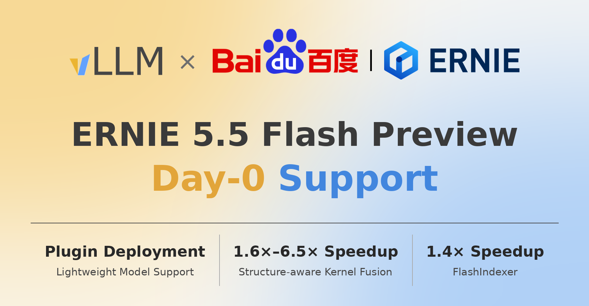
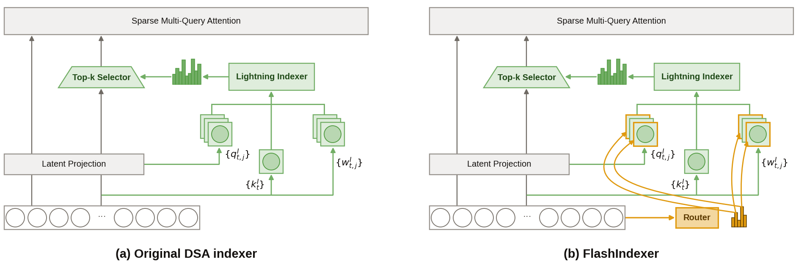
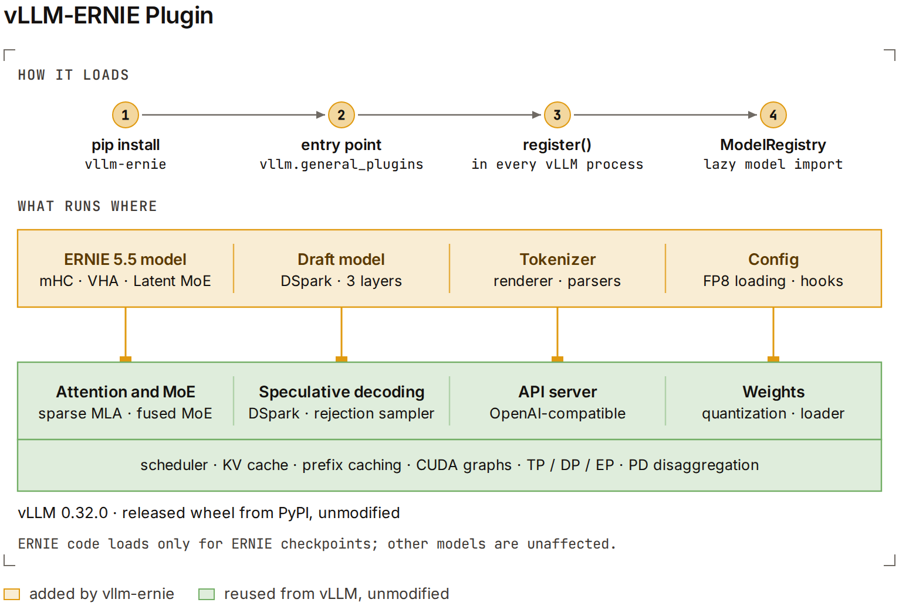

vLLM 首日支持 ERNIE 5.5 Flash Preview：插件部署与端到端推理加速

百度 ERNIE 团队与 vLLM 合作，为 ERNIE 5.5 Flash Preview 带来首日支持。ERNIE 5.5 Flash Preview 是稀疏混合专家（MoE）模型，总参数量 280B，每个 token 激活 14B 参数。它支持 100 万 token 上下文，能够先思考再回答，并通过工具调用完成长周期智能体任务。vLLM 在模型发布当天通过 vLLM-ERNIE 插件提供支持；该插件是一个独立包，与官方 vllm==0.32.0 wheel 安装在同一环境中。
亮点
- 模型架构： 43 层，总参数 280B、激活参数 14B。其中 37 层使用高度压缩注意力（Heavily Compressed Attention，HCA），6 层使用带 DSA 稀疏注意力的 MLA。模型还包含低秩注意力门、虚拟头注意力（Virtual Head Attention，VHA）、多路由器潜在 MoE、mHC 残差流和 MultiMax 输出头。
- 稀疏索引器加速： 随权重发布的即插即用 FlashIndexer 通过动态 head 路由和阈值预过滤降低索引成本，在 100 万上下文下实现 40% 加速。
- 量化： 默认 checkpoint 的路由专家使用 MXFP4（W4A8），其余权重使用 FP8；同时提供 FP8 与 BF16 checkpoint。KV 缓存使用 FP8，DSA 索引器缓存可使用 MXFP4。
- 推测解码： 权重附带一个三层、基于 MoE 的 DSpark 草稿模型。它每步最多提出 7 个 token，在真实编程和智能体负载中平均接受长度超过 4.0。
- 推理加速： 支持结合专家并行的数据并行注意力、TP2/4/8 的注意力张量并行、基于 Mooncake 的 prefill-decode（PD）解耦，以及 KV 缓存卸载到 CPU。
- vLLM 插件： 从 PyPI 安装
vllm==0.32.0，再在同一环境安装 vLLM-ERNIE 插件。无需维护 fork，也无需等待模型专用 Docker 镜像或 nightly wheel。
使用方法
在同一环境安装已发布的 vLLM wheel 和插件。vLLM 会通过 vllm.general_plugins entrypoint 自动发现插件，无需额外 import 或配置。
uv venv --python 3.12
source .venv/bin/activate
uv pip install vllm==0.32.0
uv pip install git+https://github.com/baidu/vLLM-ERNIE.git
以下命令在单个四 GPU 节点上服务默认 FP4 权重，并启用 DSpark 推测解码，每步草拟 7 个 token：
vllm serve baidu/ERNIE-5.5-Flash-Preview \
--trust-remote-code \
--data-parallel-size 4 \
--enable-expert-parallel \
--kv-cache-dtype fp8 \
--max-model-len 131072 \
--reasoning-parser ernie5 \
--tool-call-parser ernie5 \
--enable-auto-tool-choice \
--attention-config '{"indexer_kv_dtype": "mxfp4"}' \
--speculative-config '{"method": "dspark", "num_speculative_tokens": 7, "draft_sample_method": "probabilistic"}'
向 Chat Completions endpoint 发送请求：
curl http://localhost:8000/v1/chat/completions -H 'Content-Type: application/json' -d '{
"model": "baidu/ERNIE-5.5-Flash-Preview",
"messages": [{"role": "user", "content": "What is 15% of 240?"}],
"max_tokens": 4096
}'
若要为单个请求关闭思考，可传入 "chat_template_kwargs": {"enable_thinking": false}。100 万上下文、注意力 TP 和 PD 解耦的启动命令见 vLLM-ERNIE README 和 vLLM recipe。
模型架构概述
ERNIE 5.5 Flash 从设计之初就以推理成本为主要目标，同时权衡激活计算量、KV 缓存大小和长上下文开销。从注意力结构和残差连接，到 MoE 层与输出头，每个组件都围绕这一目标重新设计。设计与训练细节见 ERNIE 5.5 Flash Preview 博客。
| 项目 | 详情 |
|---|---|
| 参数 | 总计 280B，每 token 激活 14B |
| 层数 | 43；第 0 层为稠密 FFN，第 1–42 层为 MoE |
| 注意力 | 37 个 HCA 层（head dim 512）+ 6 个 MLA-DSA 层（head dim 256）；64 个 query head、1 个 KV head |
| 隐藏维度 | 4096，由 4 条 mHC 残差流承载 |
| MoE | 512 个路由专家（top-10）+ 1 个共享专家；专家在 2048 维潜在空间中计算 |
| 词表 | 201,216 |
| 上下文长度 | 100 万（1,048,576）token，在后训练中从 Base 模型的 128K 扩展 |
| 量化精度 | 路由专家使用 MXFP4（W4A8，量化感知训练），其他权重使用 FP8；FP8 KV 缓存；FP4 DSA 索引器 |
| 草稿模型 | DSpark，3 层，草稿 block 为 2–7 token，随权重发布 |
针对 ERNIE 5.5 Flash 架构的内核融合
ERNIE 5.5 Flash 在注意力和 MoE 中引入多种新结构：低秩跨 head 后混合（VHA post-mix）、多路由器潜在 MoE、MultiMax 输出头和 sigmoid 输出门控。若按数学定义逐算子实现，这些结构会产生大量中间张量，并为其付出内存流量和内核启动成本。针对每一种结构，我们根据其计算与内存访问特征设计专用融合内核，并在加载权重时把可预计算的内容折叠进权重。这些融合内核比朴素实现快 1.55×–6.53×。
- VHA 跨 head 混合：预折叠并融合 FP8 量化。 VHA 沿 head 维对注意力输出执行低秩混合。直接计算需要两次低秩矩阵乘法和一次残差加法。由于混合参数在推理时固定，我们在加载权重时把它们折叠成单一混合矩阵，推理只需一次小 matmul。下游输出投影所需的 FP8 量化也移入同一内核：混合结果直接在寄存器中量化，避免 BF16 中间结果往返内存。单内核快 1.56×–1.73×。
- 多路由器潜在 MoE：合并 router GEMM 与融合路由链。 加载时拼接全部 router 权重，一次 GEMM 产生所有 router 的 logits。分数求和、带偏置 top-10 选择、权重归一化和逐专家缩放在一个内核中执行，所选专家与未融合实现完全一致。单内核快 3.54×–6.10×。
- MultiMax 输出头：单 pass 融合分段激活。 MultiMax 对约 20 万个 logits 执行四段分段变换。逐项实现会反复读写完整 logits 行，受内存带宽限制。融合实现只用一次 pass，每个元素只读写一次，输出与逐项实现逐位一致。单内核快 4.33×–6.53×。
- 门控注意力：合并 gate 投影并融合 sigmoid 门控。 query 上投影和输出 gate 使用同一低秩潜在向量作为输入，因此拼接二者权重并用一次 GEMM 计算。sigmoid 激活与门控乘法融合到一个内核中，结果与逐算子实现逐位一致。prefill 中单内核快 1.55×–1.75×。
- 其他融合。 还融合了 norm、RoPE 和 KV 缓存写入；稀疏索引器中的 RoPE、Hadamard 变换和低位量化；mHC 残差连接；MegaMoE 专家计算；DSpark 草稿采样。Programmatic Dependent Launch（PDL）进一步缩短内核启动间隙。
这些融合覆盖 ERNIE 5.5 Flash 的完整 forward pass，从注意力与 MoE 路由一直到输出头。它们减少内核启动次数和中间张量往返 GPU 内存的次数，同时保持数值一致，是模型高推理性能的基础。
即插即用的稀疏索引器路由
百度 ERNIE 推理团队开发了基于动态 head 路由的轻量索引器加速方案 FlashIndexer。它在索引器中插入一个小型 head router。对每个 query token，router 只查看当前 token 的隐藏状态，选择少量稀疏索引器 head 执行 token 级稀疏选择，从而大幅减少稀疏索引计算。由于路由只依赖当前 token，成本不会随上下文长度增长。原 DSA 接口和下游稀疏注意力计算保持不变。
FlashIndexer 只需用少量数据做一次短微调。训练时冻结 backbone 和 DSA 索引器，只更新轻量 router。原始 DSA 选择的 token 集合作为 teacher-forced 蒸馏目标，使路由索引器学会复现全部 head 的选择。router 很小且训练稳定：约 10 亿 token 即可完成适配，部署时只需加载 router 权重。

FlashIndexer 还加入阈值预过滤，提前跳过低分候选 token，缩小 top-k 候选集合。ERNIE 5.5 Flash 的 DSA 使用较大的 token 级 top-k=2048，因此该机制进一步降低 top-k 选择成本。在 100 万上下文下，实测加速 1.4×，明显缓解长上下文 prefill 的索引瓶颈。FlashIndexer 无需修改下游稀疏注意力内核，可作为可插拔模块快速集成。
FP4 量化感知训练
为在加速 W4A8 推理的同时保持无损精度，ERNIE 5.5 Flash 在后训练阶段加入 W4A8 量化感知训练（QAT）。训练所用假量化在量化粒度、scale 和舍入规则上与推理完全一致，消除了训练与推理数值不匹配造成的精度差距。QAT 几乎不影响训练吞吐量，得到的模型可直接用于 W4A8 推理，无需额外转换或校准。KV 缓存以 FP8 保存以减小容量，DSA 中的索引器计算则以 FP4 运行以提高速度。
多阶段 DSpark 推测解码训练
ERNIE 5.5 Flash 在预训练中使用单步 ECHO MTP。后训练阶段可通过动态采样把该模块继续训练为多步 MTP，在多步上具有良好外推能力。自回归推测解码和并行推测解码各有优势，取决于任务熵高低和服务并发度，因此后训练中也加入了 DSpark 推测解码训练。
我们构建了覆盖中期训练、后训练和 on-policy 蒸馏的多阶段 DSpark 训练流水线。主模型完成中期训练后，草稿模型在高性能草稿训练框架上使用 DSpark + D-Pace recipe 离线训练，速度比传统联合训练快 3× 以上。后训练期间，MTP 与 DSpark 兼容训练，DSpark 权重持续更新，以跟踪不断变化的主模型策略，限制两个模型分布漂移造成的接受率下降。后训练完成后，再使用 E2E-TV 目标执行 on-policy distillation（OPD），在实时数据分布上继续优化 DSpark，使其更适应真实推理请求。最终在真实编程和复杂智能体负载中，平均接受长度超过 4.0，提高在线推理效率。
使用 vLLM 插件高效支持新模型
ERNIE 5.5 Flash Preview 通过独立 Python 插件包在 vLLM 中运行；vLLM 通过 vllm.general_plugins entrypoint 加载。插件主要包含 ERNIE 模型代码和一组内核优化。注意力内核、KV 缓存管理器、推测解码、并行机制与服务器主要复用 vLLM 本身。

如何集成插件
vLLM-ERNIE 声明一个 entrypoint：
[project.entry-points."vllm.general_plugins"]
ernie = "vllm_ernie:register"
启动时，vLLM 会在每个进程中调用 register()，包括 API server、engine core 和各 worker。该函数以模块路径而不是已导入类的方式，把 ERNIE 架构注册到 ModelRegistry：
ARCHITECTURES = {
"Ernie5_5_MoeForCausalLM": "Ernie5_5ForCausalLM",
"Ernie5_5MoeMTPModel": "Ernie5_5MTP",
"Ernie5_5_MoeDSparkDraftModel": "Ernie5_5DSparkForCausalLM",
# ...
}
def register() -> None:
from vllm import ModelRegistry
for arch, cls_name in ARCHITECTURES.items():
if arch not in ModelRegistry.get_supported_archs():
ModelRegistry.register_model(arch, f"{_MODEL_MODULE}:{cls_name}")
apply_patches()
只有当模型 config.json 指定这些架构之一时，插件才会导入模型代码，因此安装插件不会给同一环境中的其他模型增加开销。register() 还会注册 ernie5_5_moe config 类、tokenizer 模式、chat renderer，以及 reasoning 和 tool-call parser。设置 VLLM_PLUGINS="" 可禁用插件。
插件给用户带来的能力
- 官方 wheel 可直接运行。 ERNIE 5.5 Flash Preview 可直接运行在 PyPI 的
vllm==0.32.0上，无需拉取模型专用镜像，也无需等待代码合并和 nightly build。 - 修复与功能可按模型节奏发布。 自 Base 版本以来，插件已经加入 128×128 block FP8 权重、注意力张量并行、MXFP4 路由专家、内置 DSpark 草稿模型和 Python chat renderer，无需等待 vLLM 发布。
- 现有 vLLM 功能开箱即用。 前缀缓存、chunked prefill、完整和分段 CUDA graph、推测解码、PD connector、KV offload 和 OpenAI 兼容服务器均无需 ERNIE 专用代码即可工作。
- 每次升级版本即可获得上游改进。 vLLM core 的新内核、调度器和 connector，在插件迁移到下一版 vLLM 时即可提供给 ERNIE 5.5。
- 不影响其他模型。 插件只对共享 vLLM 代码应用少量 hook，且仅对 ERNIE 架构生效。
致谢
感谢百度 ERNIE 团队提供模型，也感谢 vLLM 社区。本文使用的许多压缩注意力、稀疏注意力、融合 MoE 和 DSpark 推测解码组件，都复用了社区此前构建的实现。